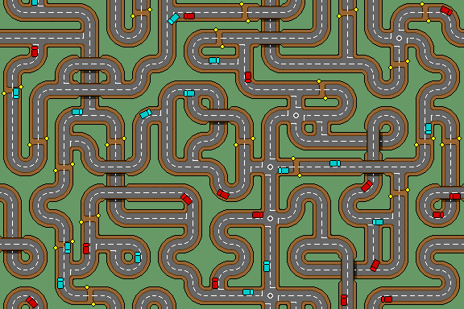
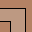
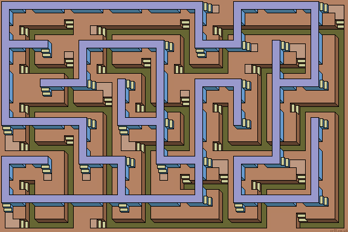

Connected Mazes
Connected mazes are perfect mazes (so all paths are reachable) but with added fusing causing loops. There can have more than one solution. Connected mazes can also include weaving where paths pass under or over each other.
|
|
Blank tile-0 and dead ends are not used. Also, there are two additional variations of tile-15, the under and over pass tiles, (either one of which is selected at random). The blue and red vans are added sprites.
See more at Roadways.
Stage: Roadway Layout
Twin Path Mazes
Two sets of maze tiles can be used together. The best effect is achieved if weaving is allowed. Extra interchange (link) tiles can then allow the path between both tilesets if necessary. I keep both paths to their own grids. The regularity makes rules easier to write and gives a visually strong interlocked effect.
Here, extra interchange path tiles at ground level have been added to link the upper 'bridge' walkway and lower 'trench' paths. The exits list will also need to be modified, so wandering sprites can swop paths correctly.
|  | |
| a | b |
See more at Twin Maze designs.
Stage: Twin Path Tiles
Block Mazes
The perfect maze algorithm can also be used to generate perfect block (or hedge) mazes. Here, confusingly, the blocks are actually gaps between the maze floor tiles. This allows the more detailed repeat background pattern of 3x3 cells to show through. Shadows have been added to the floor tiles from a 6 tileset. The plain no shadow tile is not needed.
|
|
See more dungeon maze designs.
Stage: 3d Dungeon Maze